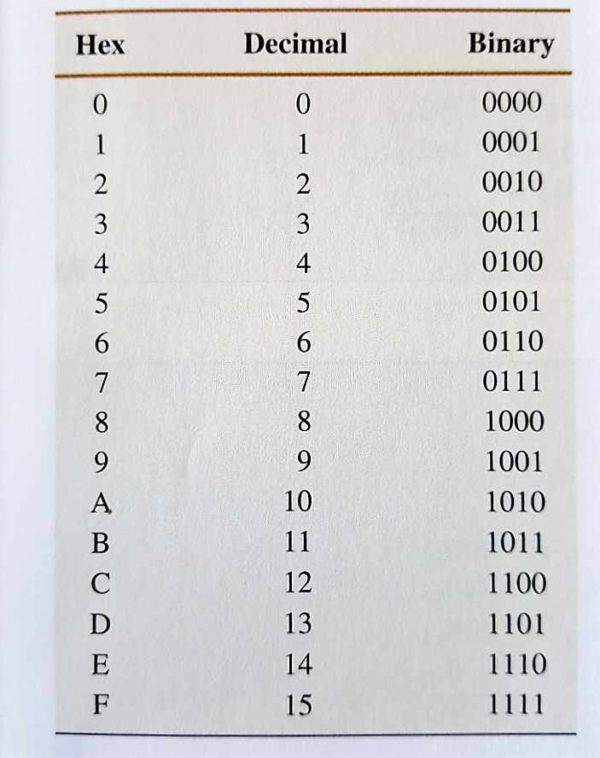

(1) Het hexadecimale systeem, ook wel verkort naar hex, wordt gebruikt door computers. Het gebruikt de getallen 0-9, maar ook de letters A-F. A is 10 en F is 15. Het wordt met name gebruikt door de gemakkelijkere leesbaarheid. Het is een base16 systeem. Om duidelijk te maken dat het gaat om een hexadecimaal getal wordt er vaak een # of een $ voor het getal gezet. Ook kan er soms 16 in subscript naast staan, dit toont ook dat het hexadecimaal is. Elk getal naar Links is een macht van 16 hoger, beginnend bij de macht van 0, * het symbool wat er staat. 3A is dus bijvoorbeeld 3*16^2+A (10) *16^1 = 58. Het hexadecimale stelsel naar het decimale stelsel veranderen is natuurlijk handig, zodat wij het kunnen lezen, maar waar het echt op aan komt is het veranderen van/naar het binaire stelsel, aangezien het binaire stelsel erg dicht verbonden staat.
(2) Om het hexadecimale stelsel te veranderen van/naar binair moet je de volgende stappen ondernemen: om te beginnen split je jouw binaire getal op in groepjes van 4, ieder van deze groepjes kunnen maximaal het getal 15 maken, dit zijn dus, inclusief het getal 0, 16 getallen, precies het aantal dat er in het hexadecimale stelsel zitten.
(3) Het hexadecimale stelsel wordt vaak gebruikt in de informatica, vooral om het binaire systeem makkelijker te lezen maken; binaire getallen worden al vrij snel vrij groot, door de verkorting die het hexadecimale stelsel biedt gebeurt dit een stuk slomer. Dit wordt tegenwoordig vaak gedaan met het hexadecimale stelsel aangezien 4 binaire cijfers gelijk is aan 1 hexadecimale cijfer, hierdoor kan je het gemakkelijker lezen door het binaire getal in groepjes van 4, zo’n groepje van 4 wordt ook wel een nibble genoemd, te splitsen en er 1 getal van te maken. Dus stel je hebt 10102 dan heb je dus A16. Voor grotere getallen bijvoorbeeld 10000100 doe je hetzelfde, maar dan stop je de 2 hexadecimale getallen aan elkaar. 1000-01002 is dus 8-4 = 8416. Andersom is het ook vrij simpel, het hexadecimale getal splits je op in "groepjes" van 1, en elk van die getallen zet je om in binair en plak je aan elkaar. Zo wordt 1816 in binair 1 = (000)1 + 8 = 1000 = (000)1(-)10002.
 (4) Het wordt dus veel gebruikt in de informatica, enkele voorbeelden van dit gebruik zijn als volgt:
In het geheugen van een computer wordt het hexadecimale stelsel veelal gebruikt, 1 byte zijn namelijk maar 2 hexadecimale cijfers, oftewel 1 hexadecimale cijfer is een halve byte, in vergelijking tot de 8, of 4, cijfers bij het binaire stelsel.
Het wordt ook vaak gebruikt om kleur te brengen aan bijvoorbeeld webpagina's, zo zijn rood, groen en blauw iedere 2 hexadecimale cijfers (een byte dus). Door lichte aanpassingen kan je het makkelijk iets blauwer maken of iets groener, waardoor je heel veel kleuren kan maken - (16*16)^3 oftewel 16.777.216 kleuren. Het ziet er als volgt uit: #RRGGBB – de rode cijfers zijn aangegeven door de R’s, de groene door de G’s en de blauwe door de B’s. Deze 16+ miljoen kleuren geven dus meer dan genoeg opties om je pagina een eigen draai te geven.
Verder wordt het ook nog gebruikt voor Media Acces Control (MAC) adressen. Een MAC-adres is een nummer die uniek is voor iedere internet-verbonden apparaat. Dit verschilt met een IP-adres wat verbonden is aan een router. Een MAC-Adres is direct verbonden aan je hardware aangezien het meegeleverd wordt in je netwerkaart. Deze MAC-adressen bestaan uit 12 hexadecimale cijfers. Vaak wordt het gebruikt via de volgende 2 voormaten: MM:MM:MM:SS:SS:SS of MMMM-MMSS-SSSS. De eerste 6 cijfers zijn voor de ID van de maker van de routers en de laatste 6 cijfers zijn het nummer van de adapter.
Het wordt ook nog gebruik voor memory Dumps, dit gebruikt komt voornamelijk door het feit dat het sneller is dan binair, en het minder schermruimte gebruikt. Ook is het makkelijker om foutjes te vinden en op te lossen. Een memory dump is een proces waarin je al je RAM content schrijft in een DMP bestand. Het is een belangrijke tool om diagnostische informatie te krijgen en probleem op te lossen. Deze dumps worden dus gedaan doormiddel van het hexadecimale stelsel vanwege alle eerder benoemde voordelen. Ook kan het gebruikt worden als een beveiligingmiddel aangezien het feit dat RAM-geheugen rest tijdens het herstarten of tijdens een crash. Hierdoor kan je bijvoorbeeld zien wat daarvoor gebeurde- zo kan het bijvoorbeeld malware vinden of andere foutieve dingen waarmee je volgende crashes zou kunnen voorkomen.
Als laatste wordt het ook nog gebruikt om foutmeldingen te geven. Dit komt doordat hexadecimale getallen gebruikt worden om de locatie van het geheugen van de fout te vinden. Dit is vooral handig voor programmeurs en andere mensen die bezig zijn met een programma/website om sneller te vinden wat fout is, waardoor het makkelijker is om dingen te verbeteren- wat soms cruciaal kan zijn.
(5) Het huidige hexadecimale stelsel stamt af van IBM in 1963, hiervoor waren er echter al andere versies of manieren om het te schrijven. Zo gebruikte de Benedix G-15 computer in 1956 bijvoorbeeld U-Z in plaats van A-F. Volgens oude verhalen was het systeem echter al bedacht in Frankrijk, in het jaar 770. Er was zogezegd een tovenaar, Mervin, die raad gaf aan de koning Charlemagne vanwege zijn 8 vingers per hand.
(6) De voordelen van het hexadecimale stelsel zijn dus erg groot; het is efficiënt, handig en beknopt. Hierdoor wordt het in vele onderdelen in de informatica gebruikt vanwege de vele manieren waarop het gebruikt kan worden, met name door de eerder benoemde voordelen. Het talstelsel wordt volgens oude verhalen dus al lang gebruikt, maar vooral tegenwoordig is het een onmisbaar talstelsel.